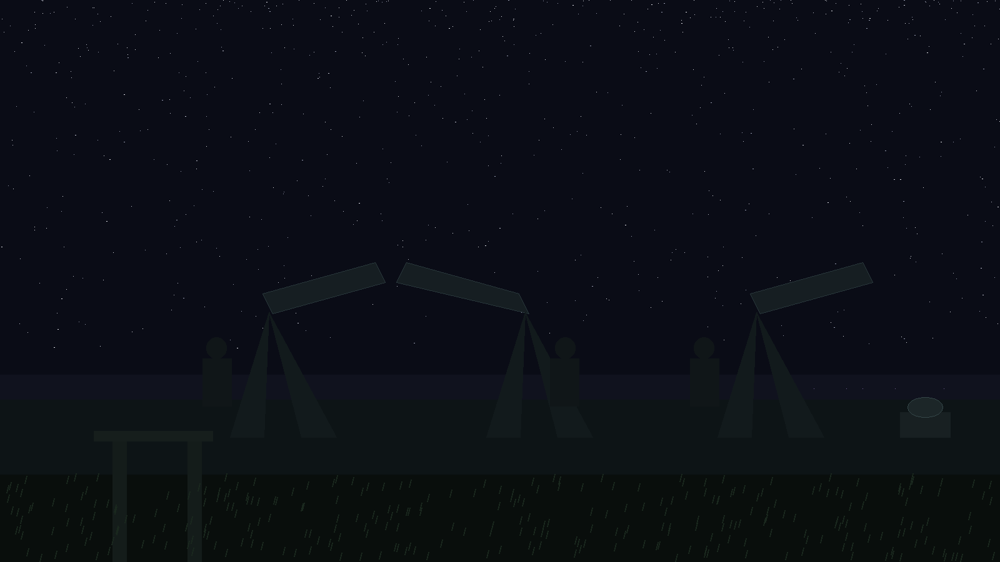
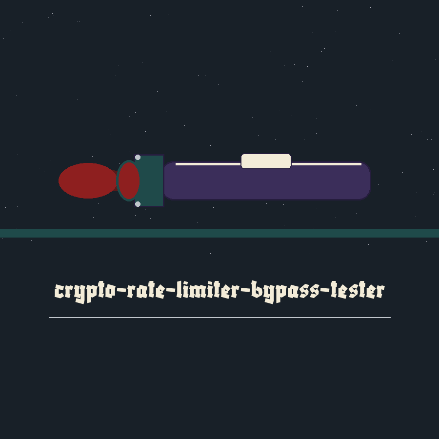
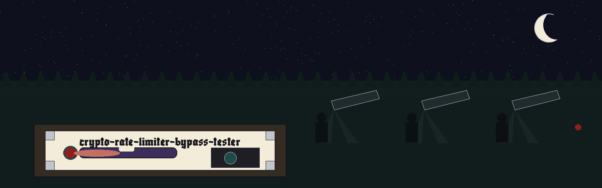

crypto-rate-limiter-bypass-tester: Astronomer's Red Torch Etiquette
Theme: Astronomer's Red Torch Etiquette. A night watch log, entries in sequence down one column, red admitted only as small filter discs beside entry headings. Headings in Blaka, running text in Archivo.


Nothing Is Transmitted
Correction of the name, at the head of the log, before anything else is timed. This program tests no rate limiter. It bypasses nothing. It sends no network request of any kind, to any address, at any point in any run. It generates its own keys and its own data inside its own process, runs one named operation in a timed loop on this one machine, and logs a total time and an average time. A reader who arrived expecting an attack on a limiter is told so here, in the first entry, at full size. The repo name is a name. It is not a description.
Installation
The clone line is shown exactly as the README prints it, in the preserved record below. The wrong organisation stands inside the code block, and this note flags it in words: the install line and the licence line both carry a name that is not the organisation that holds this repo. A second note records the fact the README omits: the program imports the cryptography package, a requirements file in the repo names it with a minimum version of cryptography>=42.0.0, and the README gives no step that installs it.
Calling form
Working form is python3 main.py, followed by --operation and one of its four choices, followed by any of the remaining controls the chosen operation uses. The operation is required. The parser refuses a run without it. No control on this program has a short form, the help control apart, and the log says so here because the placeholder in the README implies a shape it never gives.
Controls, logged in parser order
Help, -h and --help, shows the help message and exits. Operation, --operation, takes hmac, hkdf, signature, or aes, is required, and the parser enforces the set. Iterations, --iterations, takes the count of timed passes and defaults to 100, a default the README omits. Key size, --key_size, takes a byte count and defaults to 32, and it serves the HMAC run and the AES run and no other. HKDF length, --hkdf_length, takes the output length for the HKDF run and defaults to 32. Signature algorithm, --signature_algorithm, takes ecdsa or rsa and defaults to ecdsa, a default the README omits. AES mode, --aes_mode, takes cbc or ctr and defaults to cbc, a default the README also omits.
Guards Before Timing
Iterations below 1 ends the run with an error logged and a failure ending. HKDF length below 1 does the same. An AES run with a key size other than 16, 24, or 32 bytes does the same. An HMAC run with a key size below 1 byte does the same. These checks run after parsing and before any timing, so a refused run has no partial timing in its log, and a completed run has passed all four.
One Run Per Entry
HMAC run: a fresh key of the stated byte size and a fixed short test message held in the code; each pass builds a new HMAC object over the SHA256 hash and finalises it, and the log records total seconds and the average per pass. HKDF run: a salt and input keying material drawn fresh at the start of that run and held fixed across every pass; each pass builds a new HKDF object over SHA256, with the requested output length and a fixed context label held in the code, and derives once, so every pass derives the same result. Signature run, two shapes: ECDSA generates a private key on the SECP256R1 curve and each pass signs the fixed test message and then verifies it; RSA generates a private key at 2048 bits and each pass signs with PSS padding and SHA256 and then verifies. AES run: a fresh key of the stated byte size and a fixed test plaintext repeated to length; the CBC shape pads the plaintext to the block under PKCS7 before timing begins, the CTR shape needs no padding, a new cipher context is built for every pass, the initialisation vector is drawn on the first pass and held fixed for the rest, and each pass encrypts and then decrypts. No digest, derived material, signature, key, plaintext, or ciphertext is printed in any run.
Judge a Run by Its Log
A completed run ends with exit code 0. A failed run, or a run the guards refuse, ends with exit code 1. Parser refusals, a missing operation or a choice outside a named set, end the run before the program's own code begins. An average in a log is a property of this machine, this library build, and this loop, on this night, and it travels no further than that. Licence closes the log. The README gives a copyright line in the wrong name and names no licence. A separate licence file stands in the repo and is a MIT licence. Both facts are shown as they stand, and no holder line from that file is printed here.
Record preserved from the README
 # crypto-rate-limiter-bypass-tester A local timing benchmark for HMAC, HKDF, signature, and AES operations. It generates its own keys and data, runs the selected operation locally for the requested number of iterations, and logs the total and average time. It sends no network requests and tests no rate limiter. - Focused on Basic cryptographic operations ## Install `git clone https://github.com/ShadowStrikeHQ/crypto-rate-limiter-bypass-tester` ## Usage `python3 main.py [params]` Each operation is timed over the requested iterations and the average is logged. The exit code is 0 when the selected operation completes and 1 when it fails or the arguments cannot produce a run (iterations below 1, an HKDF length below 1, or an AES key size other than 16, 24 or 32 bytes). ## Parameters - `--operation`: The cryptographic operation to test (hmac, hkdf, signature, aes). - `--iterations`: The number of iterations to perform. - `--key_size`: The size of the key to use in bytes (default: 32). - `--hkdf_length`: The length of the output for HKDF (default: 32). - `--signature_algorithm`: The signature algorithm to use (ecdsa, rsa). Relevant for signature testing. - `--aes_mode`: The AES mode of operation (cbc, ctr). Relevant for AES testing ## License Copyright (c) ShadowStrikeHQ
Facts from the code, stated in the prose
Facts from the code, stated in the prose. This record names: --operation, hmac, hkdf, signature, aes, --iterations, --key_size, --hkdf_length, --signature_algorithm, ecdsa, rsa, --aes_mode, cbc, ctr, SHA256, SECP256R1, PSS, PKCS7, cryptography>=42.0.0, exit code 0, exit code 1. Defaults the README omits are stated here as code facts: iterations default 100, signature algorithm default ecdsa, AES mode default cbc. The key size and HKDF length defaults are both 32. The RSA shape uses a 2048 bit key. No key, signature, plaintext, or ciphertext is printed in any run, and nothing in this record prints one either.